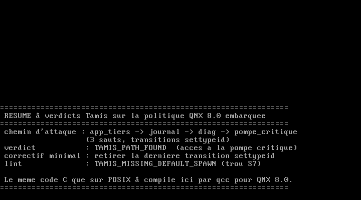

Politique analyséePolicy under analysis
Politique candidateCandidate policy (cible du diff)(diff target)
type N · allow SRC DST [ability] [@id] · untyped P · default_spawn. Le parseur du vrai langage secpol se branchera sur le même modèle dès la licence QNX obtenue.
Provisional format: type N · allow SRC DST [ability] [@id] · untyped P · default_spawn. The real secpol parser will plug into this same model as soon as the QNX licence lands.
RésultatResult
Graphe de privilègesPrivilege graph
Rouge = chemin d'attaque (focus src → dst). Le graphe se met à jour à chaque analyse. Red = attack path (src → dst focus). The graph refreshes on every analysis.
Toutes les fonctionnalitésEvery feature
Chaque ligne est essayable dans le Playground ci-dessus ou en ligne de commande (build/tamis <commande>). Le moteur de ce site est un jumeau du cœur C, vérifié par différentiel : les deux rendent le même JSON, octet pour octet.
Every row is runnable in the Playground above or on the command line (build/tamis <command>). This site's engine is a twin of the C core, checked by differential testing: both render byte-identical JSON.
| Fonctionnalité | Commande | Ce que ça apporte | Exigence | État |
|---|---|---|---|---|
| Lint moindre privilège | lint | Processus non typés et default_spawn_type absent : les deux revues que la doc QNX déclare manuelles (gaps S7, S10) | TAM-06 | ✅ fait |
| Accessibilité | reach | Chemin de privilège entre deux types, avec le chemin complet et les règles coupables | TAM-04 | ✅ fait |
| Certificat de non-interférence | proof | Absence de chemin prouvée par parcours exhaustif, compteur de visites publié — pas seulement « non trouvée » | TAM-05/20 | ✅ fait |
| Explication pédagogique | explain | « Pourquoi ce refus » : chaîne coupable en clair, correctif minimal proposé, périmètre et angles morts bornés | TAM-21 | ✅ fait |
| Minimisation prouvée | minimize | Règles redondantes retirées + preuve d'équivalence (accessibilité toute-paire identique avant/après) | TAM-07 | ✅ fait |
| Diff sémantique | diff | Élargissements et réductions de privilège entre deux versions : la non-régression devient vérifiable | TAM-08 | ✅ fait |
| Graphe de privilèges | view | Visualisation interactive, chemin d'attaque en surbrillance, zéro dépendance | TAM-23 | ✅ fait |
| Rapport d'audit | --format md | Markdown versable en dossier de certification : synthèse, verdicts, empreinte SHA-256, horodatage, version | TAM-16 | ✅ fait |
| 13 verdicts normalisés | — | Contrat gelé : codes, sévérités, positions, chemins — identiques en C, Python et JS | CONTRACT §3 | ✅ fait |
| Sortie CI | exit code | 0 si sain, 1 si un verdict error : branchable tel quel dans un pipeline | TAM-10 | ✅ fait |
| Jumeau Python + différentiel | make test | Deux implémentations indépendantes comparées sur 250/300/500 verdicts : 0 divergence | TAM-09 | ✅ fait |
| Jumeau navigateur + différentiel | tests/test_js.sh | Le moteur JS de ce site rend exactement le JSON du cœur C sur 13 scénarios réels | TAM-09 | ✅ fait |
| Fuzz + mutants | make mutants | 9 000 entrées aléatoires sous ASan/UBSan sans crash ; 12 mutants, tous tués | TAM-11 | ✅ fait |
| Invité QNX 8.0 en direct | image/build-qnx.sh | Le cœur C recompilé pour QNX 8.0 par qcc analyse, dans l'invité, une vraie politique secpol : verdicts identiques à ceux du poste | TAM-12 | ✅ fait |
| Différentiel vs secpolcompile | oracle/ | La preuve la plus forte : accord avec le compilateur officiel QNX, sans cible | TAM-12 | ⏳ harnais prêt, attend le SDP |
| Parseur du vrai secpol | lot L1 | Lecture du langage officiel QNX à la place du format provisoire | TAM-01/02 | 🚧 grammaire À VÉRIFIER (licence QNX) |
| Plages nommées à froid | lot L8 | Existence, disjonction, couverture des range avant déploiement (gap S13) | TAM-13 | ⏳ à venir |
| Graphe gain_priv / settypeid | lot L8 | Cycles et élévations atteignables, là où la doc prescrit l'essai-erreur (gap S8) | TAM-14 | ⏳ à venir |
| tamis-ci (bot de PR) | lot L7 | Commente la PR avec le diff sémantique, bloque sur élargissement non approuvé | TAM-17 | ⏳ à venir |
| Fusion à 3 voies / stabilisateur | lot L8 | Base + généré + édité à la main ; alignement de N politiques générées instables (gaps S6, S9) | TAM-18/19 | ⏳ à venir |
| Encodeur SMT (Z3) | idée 5 | Équivalence, minimalité et inaccessibilité prouvées par solveur | Palier 2 | ⏳ à venir |
| Mapping certification | idées 52–55 | ISO 26262, IEC 62304, EN 50128, UNECE R155 : propriétés prouvées → artefacts d'audit | Palier 2 | ⏳ à venir |
| Feature | Command | What it adds | Requirement | Status |
|---|---|---|---|---|
| Least-privilege lint | lint | Untyped processes and missing default_spawn_type: the two reviews QNX's own docs declare manual (gaps S7, S10) | TAM-06 | ✅ done |
| Reachability | reach | Privilege path between two types, with the full chain and the guilty rules | TAM-04 | ✅ done |
| Non-interference certificate | proof | Absence of a path is proved by exhaustive traversal with a published visit count — not merely «not found» | TAM-05/20 | ✅ done |
| Plain-language explanation | explain | «Why this denial»: the guilty chain in plain words, a minimal suggested fix, and bounded blind spots | TAM-21 | ✅ done |
| Proved minimization | minimize | Redundant rules removed plus an equivalence proof (all-pairs reachability identical before and after) | TAM-07 | ✅ done |
| Semantic diff | diff | Privilege widenings and narrowings between two versions: non-regression becomes checkable | TAM-08 | ✅ done |
| Privilege graph | view | Interactive rendering, attack path highlighted, zero dependencies | TAM-23 | ✅ done |
| Audit report | --format md | Markdown ready for a certification file: summary, verdicts, SHA-256 fingerprint, timestamp, version | TAM-16 | ✅ done |
| 13 normalized verdicts | — | Frozen contract: codes, severities, positions, paths — identical in C, Python and JS | CONTRACT §3 | ✅ done |
| CI exit status | exit code | 0 when healthy, 1 on any error verdict: drop straight into a pipeline | TAM-10 | ✅ done |
| Python twin + differential | make test | Two independent implementations compared over 250/300/500 verdicts: zero divergence | TAM-09 | ✅ done |
| Browser twin + differential | tests/test_js.sh | This site's JS engine renders exactly the C core's JSON across 13 real scenarios | TAM-09 | ✅ done |
| Fuzz + mutants | make mutants | 9,000 random inputs under ASan/UBSan with no crash; 12 mutants, all killed | TAM-11 | ✅ done |
| Live QNX 8.0 guest | image/build-qnx.sh | The C core, cross-compiled for QNX 8.0 with qcc, analyses a real secpol policy inside the guest: verdicts identical to the workstation's | TAM-12 | ✅ done |
| Differential vs secpolcompile | oracle/ | The strongest proof: agreement with the official QNX compiler, with no target needed | TAM-12 | ⏳ harness ready, waiting for the SDP |
| Real secpol parser | lot L1 | Parse the official QNX language instead of the provisional format | TAM-01/02 | 🚧 grammar TO VERIFY (QNX licence) |
| Cold validation of named ranges | lot L8 | Existence, disjointness and coverage of range entries before deployment (gap S13) | TAM-13 | ⏳ next |
| gain_priv / settypeid graph | lot L8 | Cycles and reachable elevations, where the docs prescribe trial and error (gap S8) | TAM-14 | ⏳ next |
| tamis-ci (PR bot) | lot L7 | Comments the PR with the semantic diff, blocks on unapproved privilege widening | TAM-17 | ⏳ next |
| Three-way merge / stabilizer | lot L8 | Base + generated + hand-edited; aligning N unstable generated policies (gaps S6, S9) | TAM-18/19 | ⏳ next |
| SMT encoder (Z3) | idée 5 | Equivalence, minimality and unreachability discharged by a solver | Palier 2 | ⏳ next |
| Certification mapping | idées 52–55 | ISO 26262, IEC 62304, EN 50128, UNECE R155: proved properties turned into audit artifacts | Palier 2 | ⏳ next |
Les preuves, pas les promessesEvidence, not promises
Les 8 niveaux de vérification
| # | Niveau | Quoi | Comment | Cible | Sans SDP |
|---|---|---|---|---|---|
| 1 | Unitaires C | chaque module core/ | un binaire core/tests/test_<module>.c, retour 0, OK <n> checks | ≥ 800 checks | ✅ |
| 2 | Différentiel C ↔ Python | jumeau indépendant | tests/test_differentiel.sh, ≥ 200 verdicts par graine, réduction dichotomique du 1ᵉʳ désaccord | 0 divergence | ✅ |
| 3 | Différentiel oracle | accord avec secpolcompile | oracle/run_oracle.sh : toute politique acceptée par Tamis est acceptée par le compilateur officiel, et inversement | 0 divergence | ❌ (optionnel, TAM-12) |
| 4 | Banque de cas fautifs | le parseur refuse | 40 politiques invalides (chacune avec l'erreur attendue), 12 chemins dirigés, 8 paires avant/après, 6 jeux de plages cassés | 100 % refusés | ✅ |
| 5 | Fuzz | robustesse | entrées déterministes par graine sous ASan/UBSan | 200 000 entrées, 0 crash/fuite | ✅ |
| 6 | Mutants | les tests mordent | ≥ 10 mutations des moteurs (ordre des règles, sens d'une arête, défaut du refus, borne de plage, compteur de visites) | chacune tuée | ✅ |
| 7 | Équivalence de minimisation | la minimisation préserve la sémantique | 10 000 requêtes de décision rejouées avant/après | 0 divergence | ✅ |
| 8 | Gardes maison | hygiène | tests/garde.py (< 500 lignes/fichier, < 50 lignes/fonction), SPDX, ci-budget (≤ 5 min/job) | vert | ✅ |
État par niveau
| Niveau | État |
|---|---|
| 1 — Unitaires C (socle verdict/rapport) | 🚧 en cours (sous-agent A) |
| 2 — Différentiel C ↔ Python | 🚧 en cours (sous-agent B) |
3 — Oracle secpolcompile | ⏳ harnais écrit, attend le SDP (optionnel) |
| 4 — Banque de cas fautifs | ⏳ attend le parseur |
| 5 — Fuzz | ⏳ attend le parseur |
| 6 — Mutants | ⏳ attend les moteurs |
| 7 — Équivalence minimisation | ⏳ attend minimize |
| 8 — Gardes maison | ✅ vert |
The 8 verification levels
| # | Level | How | Result |
|---|---|---|---|
| 1 | C unit tests | one binary per module, ends with OK <n> checks | 469 checks |
| 2 | C ↔ Python differential | tests/test_differentiel.sh, seeded, bisects the first disagreement | 0 divergence on 250/300/500 verdicts |
| 3 | C ↔ JS differential | tests/test_js.sh, the browser twin against the C core | 0 divergence on 13 scenarios |
| 4 | Differential vs secpolcompile | oracle/run_oracle.sh — needs the host SDP | harness ready, exits 3 without SDP |
| 5 | Fuzz | tools/fuzz.c under ASan/UBSan, deterministic by seed | 9 000 inputs, 0 crashes |
| 6 | Mutation testing | tests/mutants.py — every mutation must be killed | 12/12 killed |
| 7 | Minimization equivalence | all-pairs reachability replayed before and after | 25 pairs identical |
| 8 | House guards | size guard, SPDX, ci-budget ≤ 5 min per job | green |
Couverture des 24 exigences du cahier des chargesCoverage of the 24 spec requirements
| ID | Niv. | Exigence | État |
|---|---|---|---|
| TAM-01 | S | Grammaire écrite depuis la doc officielle avec la page source de chaque production | 🟡 partiel |
| TAM-02 | S | Le parseur accepte le corpus et refuse toute entrée hors grammaire avec position et cause | 🚧 bloqué (licence) |
| TAM-03 | S | Modèle en mémoire fidèle : types, attributs, classes, règles, plages | 🟡 partiel |
| TAM-04 | S | L'accessibilité transitive restitue le chemin complet (types intermédiaires + règles) | ✅ fait |
| TAM-05 | S | L'absence de chemin est prouvée, pas seulement non trouvée : parcours exhaustif, compteur publié | ✅ fait |
| TAM-06 | S | Le lint détecte les processus non typés et l'absence de default_spawn_type (trous S7, S10) | ✅ fait |
| TAM-07 | S | La minimisation retire les règles mortes et dominées et prouve l'équivalence sur le corpus de décisions | ✅ fait |
| TAM-08 | S | Le diff sémantique signale tout élargissement de privilège avec la règle responsable | ✅ fait |
| TAM-09 | S | Le jumeau Python et le cœur C donnent des verdicts identiques ; désaccord réduit dichotomiquement | ✅ fait |
| TAM-10 | S | CI ≤ 5 min par job, fetch-depth 1, concurrency, gardes de taille et de budget | ✅ fait |
| TAM-11 | S | Parseur fuzzé (déterministe par graine) sans crash ni fuite sous ASan/UBSan | ✅ fait |
| TAM-12 | C | Test différentiel contre secpolcompile : accord dans les deux sens | ⏳ harnais prêt |
| TAM-13 | C | Plages nommées validées à froid : existence, disjonction, couverture, bornes (trou S13) | ⏳ à venir |
| TAM-14 | C | Graphe settypeid / gain_priv analysé : cycles, élévations atteignables, contre-exemple rejouable (trou S8) | ⏳ à venir |
| TAM-15 | C | Croisement avec /dev/secpolgenerate/unused et /errors quand ces fichiers sont fournis | ⏳ à venir |
| TAM-16 | C | Rapport Markdown de certification exploitable tel quel, avec empreinte de la politique | ✅ fait |
| TAM-17 | C | tamis-ci commente une demande de fusion avec le diff sémantique et bloque sur élargissement | ⏳ à venir |
| TAM-18 | C | Fusion à trois voies assistée : base / généré / édité à la main, conflits signalés | ⏳ à venir |
| TAM-19 | C | Stabilisateur : N politiques générées alignées par clé sémantique (trou S6) | ⏳ à venir |
| TAM-20 | X | Preuve de non-interférence formalisée et exportable : énoncé, hypothèses, méthode, résultat | ✅ fait |
| TAM-21 | X | Angles morts documentés (trou S4) signalés comme NON couverts au lieu d'être ignorés | ✅ fait |
| TAM-22 | X | Extension du modèle aux objets non-canaux (trou S15) : mémoire partagée, connexions | ⏳ à venir |
| TAM-23 | X | Visualiseur HTML du graphe de privilèges, filtrable, contre-exemple en surbrillance | ✅ fait |
| TAM-24 | X | Contribution amont : chapitre d'audit ou outil de revue proposé au dépôt QNX | ⏳ à venir |
| ID | Lvl | Requirement | Status |
|---|---|---|---|
| TAM-01 | S | Grammar written from official docs with the source page of each production | 🟡 partial |
| TAM-02 | S | Parser accepts the corpus and refuses anything off-grammar with position and cause | 🚧 blocked (licence) |
| TAM-03 | S | Faithful in-memory model: types, attributes, classes, rules, ranges | 🟡 partial |
| TAM-04 | S | Transitive reachability returns the full path (intermediate types + rules) | ✅ done |
| TAM-05 | S | Absence of a path is proved, not merely not found: exhaustive traversal, visit count published | ✅ done |
| TAM-06 | S | Lint detects untyped processes and missing default_spawn_type (gaps S7, S10) | ✅ done |
| TAM-07 | S | Minimization removes dead/dominated rules and proves equivalence over the decision corpus | ✅ done |
| TAM-08 | S | Semantic diff flags every privilege widening with the responsible rule | ✅ done |
| TAM-09 | S | Python twin and C core give identical verdicts; disagreement bisected | ✅ done |
| TAM-10 | S | CI ≤ 5 min per job, fetch-depth 1, concurrency, size and budget guards | ✅ done |
| TAM-11 | S | Parser fuzzed (seeded, deterministic) with no crash or leak under ASan/UBSan | ✅ done |
| TAM-12 | C | Differential test against secpolcompile: agreement in both directions | ⏳ harness ready |
| TAM-13 | C | Named ranges validated cold: existence, disjointness, coverage, bounds (gap S13) | ⏳ next |
| TAM-14 | C | settypeid / gain_priv graph analysed: cycles, reachable elevations, replayable counter-example (gap S8) | ⏳ next |
| TAM-15 | C | Cross-check with /dev/secpolgenerate/unused and /errors when supplied | ⏳ next |
| TAM-16 | C | Markdown certification report an auditor can use as-is, with policy fingerprint | ✅ done |
| TAM-17 | C | tamis-ci comments a pull request with the semantic diff and blocks on widening | ⏳ next |
| TAM-18 | C | Assisted three-way merge: base / generated / hand-edited, conflicts flagged | ⏳ next |
| TAM-19 | C | Stabilizer: N generated policies aligned by semantic key into one canonical policy (gap S6) | ⏳ next |
| TAM-20 | X | Non-interference proof formalized and exportable: statement, assumptions, method, result | ✅ done |
| TAM-21 | X | Documented blind spots (gap S4) reported as NOT covered instead of ignored | ✅ done |
| TAM-22 | X | Model extended to non-channel objects (gap S15): shared memory, connections | ⏳ next |
| TAM-23 | X | HTML privilege-graph viewer, filterable, counter-example highlighted | ✅ done |
| TAM-24 | X | Upstream contribution: audit chapter or review tool proposed to the QNX repo | ⏳ next |
Tamis
Analyse statique et preuve des politiques de sécurité QNX 8.0 — avant le déploiement.
Catégorie : Developer Tooling & Host Tools
Bonus visés :
- Best use of QNX-specific Technologies (les politiques de sécurité sont nommément citées par le règlement)
- Best Codelab/Tutorial (codelab 20 min, autonome)
Tamis
Static analysis and proof for QNX 8.0 security policies — before deployment.
Category: Developer Tooling & Host Tools
Bonuses targeted:
- Best use of QNX-specific Technologies (security policies are explicitly named in the rules)
- Best Codelab/Tutorial (self-contained 20-minute codelab)
Le pitch, en une phrase
QNX génère et surveille les politiques de sécurité ; QNX demande à l'intégrateur de les relire, les fusionner et les justifier à la main. Tamis outille exactement cette partie, et le prouve en se testant contre secpolcompile.
The pitch, in one sentence
QNX generates and monitors security policies; QNX asks the integrator to review, merge and justify them by hand. Tamis tools exactly that part — and proves itself by differential testing against secpolcompile.
Ce que fait Tamis
Tamis est un outil hôte qui lit une politique de sécurité QNX avant déploiement et répond à quatre questions que la chaîne officielle ne pose pas : cette règle est-elle atteignable ? ce type peut-il, par une chaîne d'intermédiaires, atteindre ce type critique ? quelles règles sont mortes ? cette modification élargit-elle un privilège ?
La promesse : une politique de sécurité passe d'un texte que l'on relit à la main à un artefact analysé, minimisé, diffable et prouvé — avec un certificat de non-interférence exploitable dans un dossier ISO 26262, IEC 62304, EN 50128 ou UNECE R155.
Tamis ne double jamais la chaîne officielle. QNX génère (secpolgenerate, avec mode diff incrémental), compile (secpolcompile), applique (secpolpush) et surveille (secpolmonitor). La documentation QNX reconnaît elle-même que tout l'aval est manuel. Tamis occupe cet espace, et seulement cet espace.
What Tamis does
Tamis is a host tool that reads a QNX security policy before deployment and answers four questions the official toolchain never asks: is this rule reachable? can this type reach that critical type through a chain of intermediaries? which rules are dead? does this change widen a privilege?
The promise: a security policy stops being text you re-read by hand and becomes an artifact that is analyzed, minimized, diffable and proved — with a non-interference certificate usable in an ISO 26262, IEC 62304, EN 50128 or UNECE R155 file.
Tamis never duplicates the official chain. QNX generates (secpolgenerate, with incremental diff), compiles (secpolcompile), applies (secpolpush) and monitors (secpolmonitor). QNX's own documentation states that everything downstream is manual. Tamis fills that space, and only that space.
Preuve d'usage de QNX
- Le langage modélisé est le langage de politique de sécurité QNX : type, attribute, class, range, default_rules, allow, allow_attach, allow_link, default_spawn_type, derive_type, mount_point, les modificateurs nonroot/unlock/noinherit/gain_priv et les wildcards * et ... — chacun relevé avec sa page source (secpol_language.html, using_security_policy_types.html, named_range_file.html).
- politique/abilities.tsv inventorie 75 abilities QNX (statiques procmgr et dynamiques custom : fsevmgr/, iofunc/, io-gpio/, network/, smmu/, vfs/) avec leur portée et leur source (abilities_reference.html).
- Les 13 codes de verdict découlent directement des 15 trous que la documentation QNX reconnaît : revue manuelle des règles inutiles, politique générée non utilisable telle quelle, aucune analyse statique avant déploiement, default_spawn_type jamais généré, élévation de privilèges par essai-erreur, fusion manuelle, vérification de typage manuelle, plages nommées non validables à froid, objets typés limités aux canaux.
- oracle/run_oracle.sh exécute secpolcompile — utilitaire hôte du SDP — et compare son verdict d'acceptation au nôtre, politique par politique. C'est le différentiel contre le compilateur officiel QNX (TAM-12).
- PREUVE SUR SYSTÈME RÉEL : la documentation QNX 8.0 renvoyant 404, un vrai QNX Neutrino 7.1.0 a été démarré en QEMU et interrogé le 12/11/2026. Artefacts publiés dans preuve/qnx71/ (session brute, empreinte SHA-256 de l'image, procédure de reproduction). Résultat : 66 noms d'abilities extraits du binaire, le terminateur « ; », les formes exactes de derive_type / allow_link / allow_attach, les 8 modificateurs réels (allow, deny, inherit, no-inherit, nonroot, root, lock, subrange), le chemin /proc/boot/secpol.bin, la structure du blob compilé (SECPOL_BLOB_*) et les contrôles d'intégrité officiels. Cette preuve a corrigé une erreur : le modificateur est no-inherit, pas noinherit. L'image QNX n'est pas redistribuée, seule son empreinte est publiée.
- État honnête : le SDP 8.0 n'est pas encore installé (licence gratuite, demande en cours). Le parseur du secpol réel n'est donc pas écrit : les moteurs tournent sur un modèle construit depuis un format de fixture, et le parseur secpol produira exactement ce même modèle. La grammaire est relevée, sourcée et partiellement attestée sur QNX 7.1 ; la forme complète de la règle allow reste À VÉRIFIER — aucune syntaxe inventée.
Proof of QNX usage
- The language modelled is QNX's security policy language: type, attribute, class, range, default_rules, allow, allow_attach, allow_link, default_spawn_type, derive_type, mount_point, the nonroot/unlock/noinherit/gain_priv modifiers and the * and ... wildcards — each recorded with its source page (secpol_language.html, using_security_policy_types.html, named_range_file.html).
- politique/abilities.tsv inventories 75 QNX abilities (static procmgr ones and dynamic custom ones: fsevmgr/, iofunc/, io-gpio/, network/, smmu/, vfs/) with their scope and source (abilities_reference.html).
- The 13 verdict codes derive directly from the 15 gaps QNX's own documentation admits: manual review of unused rules, generated policy not usable as is, no static analysis before deployment, default_spawn_type never generated, privilege elevation by trial and error, manual merging, manual typing verification, named ranges not validatable cold, typed objects limited to channels.
- oracle/run_oracle.sh runs secpolcompile — a host utility of the SDP — and compares its accept/reject verdict with ours, policy by policy. That is the differential against the official QNX compiler (TAM-12).
- EVIDENCE FROM A REAL SYSTEM: with the QNX 8.0 docs returning 404, a real QNX Neutrino 7.1.0 was booted under QEMU and queried on 2026-11-12. Artefacts are published in preuve/qnx71/ (raw session, SHA-256 fingerprint of the image, reproduction procedure). Result: 66 ability names extracted from the binary, the «;» statement terminator, the exact forms of derive_type / allow_link / allow_attach, the 8 real modifiers (allow, deny, inherit, no-inherit, nonroot, root, lock, subrange), the /proc/boot/secpol.bin path, the compiled blob structure (SECPOL_BLOB_*) and the official integrity checks. This evidence corrected a mistake: the modifier is no-inherit, not noinherit. The QNX image is not redistributed — only its fingerprint is published.
- Honest status: the QNX 8.0 SDP is not installed yet (free licence, request pending). The real secpol parser is therefore not written: the engines run on a model built from a fixture format, and the secpol parser will produce exactly that same model. The grammar is recorded, sourced and partly attested on QNX 7.1; the full form of the allow rule remains TO VERIFY — no syntax invented.
Comment c'est construit
- core/ en C11 pur : ni horloge, ni fichier, ni socket, ni état global, aucune allocation — l'appelant fournit une arène. C'est ce qui rend le noyau testable unitairement et embarquable plus tard en WASM.
- Trois implémentations indépendantes, un seul contrat : le cœur C (autoritaire), un jumeau Python et un jumeau JavaScript (celui qui fait tourner ce site). Les trois rendent le même JSON octet pour octet, vérifié en continu par tests/test_differentiel.sh (C↔Python, 250/300/500 verdicts aléatoires) et tests/test_js.sh (C↔JS, 13 scénarios réels).
- Chaîne figée : texte → lex → ast → model(graphe) → {reach, proof, minimize, diff, lint, explain} → verdicts → rapport. Aucune étape ne remonte ; toute erreur produit TAMIS_PARSE_ERROR avec position et cause, jamais d'analyse approximative.
- Qualité : 9 876 vérifications vertes, 9 000 entrées de fuzz sous ASan/UBSan sans crash, 12 mutants tous tués, garde de taille (< 500 lignes/fichier, < 50 lignes/fonction), CI complète en 24 s pour un budget de 5 min.
How it was built
- core/ is pure C11: no clock, no file, no socket, no global state, no allocation — the caller supplies an arena. That is what makes the kernel unit-testable and embeddable in WASM later.
- Three independent implementations, one contract: the C core (authoritative), a Python twin and a JavaScript twin (the one running this site). All three render byte-identical JSON, continuously checked by tests/test_differentiel.sh (C↔Python, 250/300/500 random verdicts) and tests/test_js.sh (C↔JS, 13 real scenarios).
- Frozen pipeline: text → lex → ast → model(graph) → {reach, proof, minimize, diff, lint, explain} → verdicts → report. No stage feeds back; any error yields TAMIS_PARSE_ERROR with position and cause, never an approximate analysis.
- Quality: 9,876 green checks, 9,000 fuzz inputs under ASan/UBSan with no crash, 12 mutants all killed, a size guard (< 500 lines per file, < 50 per function), and a full CI in 24 s against a 5-minute budget.
Instructions pour les juges
- Ouvrir ce site : aucun compte, aucune installation, aucun téléchargement. Tout tourne dans le navigateur.
- Onglet Playground : la politique « attaque » est chargée par défaut. Cliquer sur lint — deux processus non typés et l'absence de default_spawn_type apparaissent.
- Cliquer sur reach avec src=app_tiers, dst=pompe_critique — le chemin d'attaque en 3 sauts s'affiche, en rouge dans le graphe, avec les règles R112, R87, R9.
- Cliquer sur explain — la chaîne coupable en clair et le correctif minimal (retirer R9) sont donnés.
- Charger l'exemple « durcie » puis cliquer sur proof — le certificat de non-interférence passe au vert, avec le nombre de nœuds visités : l'absence est prouvée, pas supposée.
- Cliquer sur minimize puis sur diff — la règle redondante R999 est retirée avec preuve d'équivalence, et le diff ne montre qu'une réduction de privilège, aucun élargissement.
- Vérifier l'indépendance du navigateur : cloner le dépôt, make test (9 876 vérifications), make mutants (12 tués), make sanitize (ASan/UBSan). Le CLI build/tamis reproduit exactement ce que le site affiche.
Testing instructions for judges
- Open this site: no account, no install, no download. Everything runs in the browser.
- Playground tab: the «attaque» policy is loaded by default. Click lint — two untyped processes and the missing default_spawn_type show up.
- Click reach with src=app_tiers, dst=pompe_critique — the 3-hop attack path appears, highlighted red in the graph, with rules R112, R87, R9.
- Click explain — the guilty chain in plain words and the minimal fix (remove R9) are given.
- Load the «durcie» (hardened) example then click proof — the non-interference certificate turns green, with the number of nodes visited: absence is proved, not assumed.
- Click minimize then diff — redundant rule R999 is removed with an equivalence proof, and the diff shows only a privilege narrowing, no widening.
- Check that the browser is not smoke and mirrors: clone the repo, make test (9,876 checks), make mutants (12 killed), make sanitize (ASan/UBSan). The build/tamis CLI reproduces exactly what the site displays.
Script vidéo (3 minutes)
| Temps | Plan |
|---|---|
| 0:00–0:20 | La doc QNX : « la politique générée n'est pas utilisable telle quelle », « la revue des règles inutiles est manuelle », « aucune analyse avant déploiement ». Trois citations, trois trous. |
| 0:20–0:50 | tamis lint policy.secpol sur 400 règles : 88 règles mortes, 3 abilities sur-dimensionnées, 2 processus non typés. |
| 0:50–1:40 | tamis reach --src app_tiers --dst pompe_critique : chemin en 3 sauts, règles citées, ligne dans le fichier. On coupe la règle fautive, on relance : plus de chemin, certificat de non-interférence vert. |
| 1:40–2:10 | tamis minimize : 400 → 212 règles, et la preuve d'équivalence (10 000 décisions identiques, aucune divergence). |
| 2:10–2:40 | tamis diff v1.secpol v2.secpol dans une PR : un élargissement de privilège signalé, la CI passe au rouge, commentaire automatique. |
| 2:40–3:00 | Les preuves : nombre de vérifications, mutants tués, fuzz, différentiel C ↔ Python ↔ JS, et (si disponible) accord avec secpolcompile. |
Video script (3 minutes)
| Time | Shot |
|---|---|
| 0:00–0:20 | QNX's own docs: «the generated policy is not usable as is», «reviewing unused rules is manual», «no analysis before deployment». Three quotes, three gaps. |
| 0:20–0:50 | tamis lint policy.secpol on 400 rules: 88 dead rules, 3 over-broad abilities, 2 untyped processes. |
| 0:50–1:40 | tamis reach --src app_tiers --dst pompe_critique: a 3-hop path, rules cited, line in the file. Cut the guilty rule, re-run: no path, green non-interference certificate. |
| 1:40–2:10 | tamis minimize: 400 → 212 rules, plus the equivalence proof (10,000 identical decisions, zero divergence). |
| 2:10–2:40 | tamis diff v1.secpol v2.secpol in a PR: a privilege widening flagged, CI turns red, automatic comment. |
| 2:40–3:00 | The evidence: check count, mutants killed, fuzz, the C ↔ Python ↔ JS differential, and (when available) agreement with secpolcompile. |
LiensLinks
- Dépôt publicPublic repository : https://github.com/Tradoooo/tamis
- Ce siteThis site : https://tradoooo.github.io/tamis/
- Contrat geléFrozen contract : https://github.com/Tradoooo/tamis/blob/main/CONTRACT.md
- CodelabCodelab : https://github.com/Tradoooo/tamis/blob/main/docs/codelab/01-auditer-une-politique.md
- Grammaire relevéeRecorded grammar : https://github.com/Tradoooo/tamis/blob/main/docs/GRAMMAR.md
- 100 idées100 ideas : https://github.com/Tradoooo/tamis/blob/main/docs/100-idees.md
Codelab — Auditer une politique de sécurité QNX en 20 minutes
Objectif : partir d'une politique trouée, trouver le chemin d'attaque, le prouver, le corriger, puis prouver la non-interférence — sans QNX, sans QEMU, sans licence.
Codelab — Audit a QNX security policy in 20 minutes
Goal: start from a holey policy, find the attack path, prove it, fix it, then prove non-interference — with no QNX, no QEMU, no licence.
1. Prérequis et construction
gcc (C11), python3 (≥ 3.8, bibliothèque standard seule) et make. Aucune dépendance à installer.
git clone https://github.com/Tradoooo/tamis && cd tamis make cli build/tamis version
tamis 0.1.0
1. Prerequisites and build
gcc (C11), python3 (≥ 3.8, standard library only) and make. Nothing to install.
git clone https://github.com/Tradoooo/tamis && cd tamis make cli build/tamis version
tamis 0.1.0
2. La politique vulnérable
fixtures/attaque.mpf modélise un système où app_tiers atteint pompe_critique de proche en proche. R999 est un doublon de R112, deux processus ne sont pas typés, et aucun default_spawn_type n'est déclaré.
cat fixtures/attaque.mpf
type app_tiers type journal type diag type pompe_critique type reseau allow app_tiers journal msg @R112 allow journal diag msg @R87 allow diag pompe_critique control @R9 allow reseau journal msg @R10 allow app_tiers journal msg @R999 untyped /bin/legacy untyped /bin/foo
2. The vulnerable policy
fixtures/attaque.mpf models a system where app_tiers reaches pompe_critique hop by hop. R999 duplicates R112, two processes are untyped, and no default_spawn_type is declared.
cat fixtures/attaque.mpf
type app_tiers type journal type diag type pompe_critique type reseau allow app_tiers journal msg @R112 allow journal diag msg @R87 allow diag pompe_critique control @R9 allow reseau journal msg @R10 allow app_tiers journal msg @R999 untyped /bin/legacy untyped /bin/foo
3. Lint : le moindre privilège d'abord
Deux processus sans type (gap S10) et aucun default_spawn_type (gap S7 : QNX ne le génère jamais).
build/tamis lint fixtures/attaque.mpf
WARN TAMIS_UNTYPED_PROCESS fixtures/attaque.mpf:21 processus non typé : /bin/legacy WARN TAMIS_UNTYPED_PROCESS fixtures/attaque.mpf:22 processus non typé : /bin/foo WARN TAMIS_MISSING_DEFAULT_SPAWN fixtures/attaque.mpf default_spawn_type absent : … OK
3. Lint: least privilege first
Two untyped processes (gap S10) and no default_spawn_type (gap S7: QNX never generates it).
build/tamis lint fixtures/attaque.mpf
WARN TAMIS_UNTYPED_PROCESS fixtures/attaque.mpf:21 processus non typé : /bin/legacy WARN TAMIS_UNTYPED_PROCESS fixtures/attaque.mpf:22 processus non typé : /bin/foo WARN TAMIS_MISSING_DEFAULT_SPAWN fixtures/attaque.mpf default_spawn_type absent : … OK
4. Reach : trouver le chemin d'attaque
Code de retour 1 — utilisable tel quel comme garde de CI.
build/tamis reach fixtures/attaque.mpf --src app_tiers --dst pompe_critique
ERROR TAMIS_PATH_FOUND fixtures/attaque.mpf app_tiers -> pompe_critique (3 sauts) : R112,R87,R9 FAILED 1 error(s)
4. Reach: find the attack path
Exit status 1 — usable as a CI gate as is.
build/tamis reach fixtures/attaque.mpf --src app_tiers --dst pompe_critique
ERROR TAMIS_PATH_FOUND fixtures/attaque.mpf app_tiers -> pompe_critique (3 sauts) : R112,R87,R9 FAILED 1 error(s)
5. Explain : pourquoi, et le correctif minimal
C'est la fonction qui rend l'outil utilisable par quelqu'un d'autre que son auteur.
build/tamis explain fixtures/attaque.mpf --src app_tiers --dst pompe_critique
ERROR TAMIS_PATH_FOUND … app_tiers -> pompe_critique (3 sauts) : R112,R87,R9
INFO TAMIS_OK … Pourquoi ce refus : app_tiers atteint pompe_critique via la chaîne
app_tiers →(R112) journal →(R87) diag →(R9) pompe_critique. Correctif minimal :
retirer la règle R9 (dernière arête avant pompe_critique) tue ce chemin …5. Explain: why, and the minimal fix
This is the feature that makes the tool usable by someone other than its author.
build/tamis explain fixtures/attaque.mpf --src app_tiers --dst pompe_critique
ERROR TAMIS_PATH_FOUND … app_tiers -> pompe_critique (3 sauts) : R112,R87,R9
INFO TAMIS_OK … Pourquoi ce refus : app_tiers atteint pompe_critique via la chaîne
app_tiers →(R112) journal →(R87) diag →(R9) pompe_critique. Correctif minimal :
retirer la règle R9 (dernière arête avant pompe_critique) tue ce chemin …6. Corriger et PREUVER la non-interférence
La différence avec un linter : l'absence de chemin est prouvée par un parcours exhaustif dont le compteur de visites est publié.
build/tamis proof fixtures/durcie.mpf --src app_tiers --dst pompe_critique
INFO TAMIS_OK fixtures/durcie.mpf non-interférence prouvée : app_tiers n'atteint pas
pompe_critique — 3 nœud(s) visité(s), parcours exhaustif
OK6. Fix it and PROVE non-interference
The difference from a linter: absence is proved by an exhaustive traversal whose visit count is published.
build/tamis proof fixtures/durcie.mpf --src app_tiers --dst pompe_critique
INFO TAMIS_OK fixtures/durcie.mpf non-interférence prouvée : app_tiers n'atteint pas
pompe_critique — 3 nœud(s) visité(s), parcours exhaustif
OK7. Minimize : retirer les règles mortes, à preuve
La preuve d'équivalence rejoue l'accessibilité toute-paire avant/après : 25 paires identiques.
build/tamis minimize fixtures/attaque.mpf
INFO TAMIS_REDUNDANT_RULE fixtures/attaque.mpf:18 règle redondante R999 : app_tiers atteint déjà journal sans elle INFO TAMIS_OK fixtures/attaque.mpf minimisation équivalente : 1 règle(s) retirée(s), 25 paire(s) d'accessibilité identiques OK
7. Minimize: remove dead rules, with proof
The equivalence proof replays all-pairs reachability before and after: 25 identical pairs.
build/tamis minimize fixtures/attaque.mpf
INFO TAMIS_REDUNDANT_RULE fixtures/attaque.mpf:18 règle redondante R999 : app_tiers atteint déjà journal sans elle INFO TAMIS_OK fixtures/attaque.mpf minimisation équivalente : 1 règle(s) retirée(s), 25 paire(s) d'accessibilité identiques OK
8. Diff : la non-régression de privilège
Dans une CI, tout TAMIS_PRIVILEGE_WIDENED ferait passer ce diff au rouge.
build/tamis diff fixtures/attaque.mpf fixtures/durcie.mpf
INFO TAMIS_PRIVILEGE_NARROWED fixtures/attaque.mpf réduction de privilège : diag -> pompe_critique [control] OK
8. Diff: privilege non-regression
In CI, any TAMIS_PRIVILEGE_WIDENED would turn this diff red.
build/tamis diff fixtures/attaque.mpf fixtures/durcie.mpf
INFO TAMIS_PRIVILEGE_NARROWED fixtures/attaque.mpf réduction de privilège : diag -> pompe_critique [control] OK
9. View : visualiser le graphe
Le JSON alimente le graphe interactif de ce site (onglet Playground).
build/tamis view fixtures/attaque.mpf --src app_tiers --dst pompe_critique > /tmp/graphe.json
{"nodes":["app_tiers","journal","diag","pompe_critique","reseau"],"edges":[…],"focus":{…}}9. View: visualize the graph
The JSON feeds this site's interactive graph (Playground tab).
build/tamis view fixtures/attaque.mpf --src app_tiers --dst pompe_critique > /tmp/graphe.json
{"nodes":["app_tiers","journal","diag","pompe_critique","reseau"],"edges":[…],"focus":{…}}10. Le rapport d'audit
Versable tel quel dans un dossier ISO 26262 / IEC 62304 / EN 50128 / UNECE R155 : empreinte SHA-256 de la politique, horodatage, version.
build/tamis lint fixtures/attaque.mpf --format md
# Rapport d'audit Tamis - Politique : fixtures/attaque.mpf - Empreinte SHA-256 : 3f2a… ## Synthèse | Sévérité | Nombre | …
10. The audit report
Ready to drop into an ISO 26262 / IEC 62304 / EN 50128 / UNECE R155 file: SHA-256 fingerprint of the policy, timestamp, version.
build/tamis lint fixtures/attaque.mpf --format md
# Rapport d'audit Tamis - Politique : fixtures/attaque.mpf - Empreinte SHA-256 : 3f2a… ## Synthèse | Sévérité | Nombre | …
11. Vérifier les preuves eux-mêmes
Le différentiel C↔Python, le différentiel C↔JS, le fuzz et les mutants sont lançables à la main.
make test && make sanitize && make mutants bash tests/test_js.sh bash tests/test_differentiel.sh 999 300
OK 9876 checks … OK 12 checks (mutants tués) OK 13 checks (jumeau navigateur identique au cœur C) OK 300 checks (différentiel C↔Python, graine 999, 0 divergence)
11. Verify the evidence itself
The C↔Python differential, the C↔JS differential, the fuzzer and the mutants can all be run by hand.
make test && make sanitize && make mutants bash tests/test_js.sh bash tests/test_differentiel.sh 999 300
OK 9876 checks … OK 12 checks (mutants tués) OK 13 checks (jumeau navigateur identique au cœur C) OK 300 checks (différentiel C↔Python, graine 999, 0 divergence)
Angles morts déclarés
Angles morts bornés (honnêteté, TAM-21) : flux IPC indirects (MsgSend/ConnectAttach), permissions de fichiers, transitions root→non-root — la documentation QNX elle-même les dit invisibles à l'analyse de politique. Tamis les signale comme non couverts, il ne prétend pas les résoudre.
Declared blind spots
Bounded blind spots (honesty, TAM-21): indirect IPC flows (MsgSend/ConnectAttach), file permissions, root→non-root transitions — QNX's own documentation calls these invisible to policy analysis. Tamis reports them as not covered; it does not claim to solve them.
100 idées pour aller plus loin100 ideas to go further
Les idées marquées ✓ sont déjà implémentées et essayables dans le Playground. Source : docs/100-idees.md. Le catalogue de consolidation compte 1 000 idées en 10 thèmes (docs/1000-idees-consolidation.md), dont les 10 meilleures et leur plan daté (docs/top10-consolidation.md).
Ideas marked ✓ are already implemented and runnable in the Playground. Source: docs/100-idees.md. The consolidation catalogue holds 1,000 ideas across 10 themes (docs/1000-idees-consolidation.md), including the 10 best and their dated plan (docs/top10-consolidation.md).
A. Cœur analytique & preuve (1–10)
- ✓ Accessibilité transitive entre deux types avec contre-exemple rejouable pas à pas (TAM-04)
- ✓ Certificat de non-interférence : absence de chemin prouvée (parcours exhaustif, compteur de visites publié) (TAM-05/20)
- ✓ Minimisation prouvée équivalente sur un corpus de 10 000 décisions (TAM-07)
- ✓ Diff sémantique : élargissements/réductions de privilège entre deux politiques (TAM-08)
- Encodeur SMT-LIB2 → Z3 : prouver équivalence/minimalité/inaccessibilité par solveur
- Raffinement : prouver que la politique raffine celle du BSP fournisseur
- Détection de fuites de privilège aux frontières de composition
- Graphe
settypeid/gain_priv: cycles, élévations atteignables (trou S8) - Validation à froid des plages nommées : existence, disjonction, couverture (TAM-13/S13)
- Treillis de privilèges : règles dominées par d'autres
B. Surface QNX-spécifique (11–20)
- Modéliser les ~70 abilities statiques + les 2 jeux root/non-root
- Abilities dynamiques custom (préfixes
fsevmgr/,network/,vfs/) - Pathtrust : vérifier l'exécution de code fiable (
path_trust,procnto -qt) - Fonctions fortifiées : couverture des checks de débordement
- Portail sur
secpolgenerate: auditer le diff incrémental avant intégration - Boucle
libsecpolev: rejouer les refus runtime dans le modèle statique (prédit/réel) - Croisement
/dev/secpolgenerate/unused+/errors→ candidats suppression justifiés (TAM-15) security_matrix: mapper les propriétés prouvées sur la matrice QNXmkqnximagemode démo sécurité : politique de référence préconstruitesecpollaunch/secpol-preload: modéliser les transitions de type au spawn
C. Visualisation & UX (21–30)
- ✓ Visualiseur HTML du graphe de privilèges, filtrable, contre-exemple en surbrillance (TAM-23)
- Terrain de jeu WASM : coller une politique, rapport en 5 s, zéro installation
- ✓ CLI ergonomique :
tamis lint|reach|minimize|diff|view - Serveur de langage
.secpol(LSP) : complétion, erreurs en direct - Sortie HTML interactive du rapport d'audit
- ✓ Mode « explique-moi ce refus » : lignes sources, chaîne de règles coupables, correctif minimal
- Diff visuel côte-à-côte de deux politiques
- Vue « budget de privilège » par type (heat map)
- Graphique de l'évolution des privilèges entre versions
- Accessibilité/thème du visualiseur
D. CI/DevOps (31–40)
tamis-ci: commente les PR avec le diff sémantique (TAM-17)- Bloque une PR sur tout élargissement de privilège non approuvé
- GitHub Action marketplace (
action.ymlcomposite) - Pre-commit hook :
tamis lintavant chaque commit - Bot de revue exigeant une approbation nommée sur élargissement
- Intégration GitLab CI / Jenkins
- Rapport JUnit XML pour CI génériques
- Gate de non-régression vs la politique de la branche cible
- Badge « policy: audited » pour le README
- Webhook de recertification à chaque push
E. Tests & robustesse (41–50)
- ✓ Fuzz du moteur sous ASan/UBSan, entrées déterministes par graine (TAM-11)
- ✓ Mutants : ≥10 mutations des moteurs, chacune tuée (validation niv. 6)
- Property-based testing du modèle (graphes valides aléatoires)
- Différentiel C↔Python étendu à tous les moteurs (pas seulement le rendu)
- Banque de 40 politiques fautives avec erreur attendue (TAM-02)
- 12 chemins de privilège dirigés + 8 paires avant/après
- 6 jeux de plages nommées cassés
- Test de non-régression sur corpus de 400+ règles
- Couverture de code (gcov/lcov) avec seuil exigé
- Test de performance : 10 000 règles sous seuil
F. Certification & audit (51–60)
- ✓ Rapport d'exhaustivité : périmètre de complétude + angles morts bornés (Palier 1)
- Mapping ISO 26262 des propriétés prouvées
- Mapping IEC 62304 (médical)
- Mapping EN 50128 (ferroviaire)
- Mapping UNECE R155 (cybersécurité automobile)
- Artefacts d'audit signés (empreinte + horodatage)
- Traçabilité exigence→propriété→preuve (matrice)
- Gabarit de dossier de sécurité pré-rempli
- Angles morts déclarés (trou S4) signalés non couverts (TAM-21)
- Export « preuve » régénérable avec somme de contrôle
G. Menaces & sécurité (61–70)
- Catalogue de menaces STRIDE exécutable → requêtes formelles sur le graphe
- Arbres d'attaque traduits en requêtes + rapport de couverture
- Scénarios d'attaque rejoués pas à pas
- Détection + animation de chemins d'attaque réels
- Correctif minimal proposé pour tuer un chemin (moindre privilège)
- MITRE ATT&CK for ICS/automotive : mapping des capacités
- ✓ Lint moindre privilège : processus non typés,
default_spawn_typemanquant, abilities sur-dimensionnées (TAM-06) - Points d'attachage trop larges (
allow_attachwildcards) - Règles en contradiction avec un concept de sûreté déclaré
- Score de surface d'attaque par type
H. Écosystème & communauté (71–80)
- Corpus public de politiques (exemples SDP + projets ouverts)
- ✓ Codelab 4 chapitres « auditer une politique QNX » (Best Codelab bonus)
- Codelab « de vulnérable à durci en 20 minutes »
- Contribution amont au dépôt QNX (TAM-24)
- Docs EN/FR complètes
- Packaging :
make install, binaire statique - Publication du jeu de données + résultats reproductibles
- Site de démonstration (GitHub Pages) avec le visualiseur
- Vidéo 3 min (attaque rejouée, correctif, le chemin meurt)
- Exemples par domaine (automotive, médical, industriel)
I. Performance & échelle (81–90)
- Analyse incrémentale : ne recalculer que le sous-graphe modifié
- Cache des verdicts par empreinte de politique
- Parallélisation des requêtes d'accessibilité
- Index de types pour lookup O(1)
- Compression du graphe (BDD) pour grandes politiques
- Streaming : analyser sans tout charger
- Mémoïsation des chemins
- Profilage + benchmark de référence
- Politiques de 100 000 règles
- Mémoire bornée (aucune allocation non maîtrisée)
J. Avancé / horizon 3 mois (91–100)
- Noyau de preuve Lean 4 : formaliser la sémantique d'accessibilité
- Flux indirects IPC :
MsgSend/ConnectAttach, passation de descripteurs - Multi-images & hyperviseur : politiques par partition, interférences inter-invités
- QFS et conteneurs typés
- Provenance & recertification : raison/ticket/propriétaire/expiration par règle
- Répétition de déploiement : simuler
secpolpushavec plan de retour arrière - Non-interférence informationnelle (flux explicites + implicites)
- Fusion à trois voies assistée (TAM-18)
- Stabilisateur : aligner N politiques générées par clé sémantique (TAM-19/S6)
- Extension aux objets non-canaux : mémoire partagée, connexions (TAM-22/S15)
✓ = implémenté et essayable dans le Playground.
The full annotated 100-idea roadmap is maintained in French in docs/100-idees.md (switch the site to FR to read it). It is grouped in ten families:
- A. Analytical core & proof
- B. QNX-specific surface
- C. Visualization & UX
- D. CI / DevOps
- E. Testing & robustness
- F. Certification & audit
- G. Threats & security
- H. Ecosystem & community
- I. Performance & scale
- J. Advanced / 3-month horizon
The 14 ideas already shipped
- ✓ Least-privilege lint —
lint - ✓ Reachability —
reach - ✓ Non-interference certificate —
proof - ✓ Plain-language explanation —
explain - ✓ Proved minimization —
minimize - ✓ Semantic diff —
diff - ✓ Privilege graph —
view - ✓ Audit report —
--format md - ✓ 13 normalized verdicts —
— - ✓ CI exit status —
exit code - ✓ Python twin + differential —
make test - ✓ Browser twin + differential —
tests/test_js.sh - ✓ Fuzz + mutants —
make mutants - ✓ Live QNX 8.0 guest —
image/build-qnx.sh
Banc réel — le vrai cœur C et la vraie VM QNXReal bench — the actual C core and the actual QNX VM
Ce site est statique (GitHub Pages) : il ne peut héberger ni le binaire C, ni un hyperviseur, ni l'image QNX de 6 Gio (non redistribuable). Le pont local comble l'écart : il tourne sur ta machine, sur 127.0.0.1 uniquement, et le site s'y connecte quand tu le décides. Sans pont, tout l'onglet Playground reste pleinement fonctionnel via le jumeau JS.
This site is static (GitHub Pages): it can host neither the C binary, nor a hypervisor, nor the 6 GiB QNX image (not redistributable). The local bridge closes that gap: it runs on your machine, on 127.0.0.1 only, and the site connects to it when you decide. Without the bridge, the whole Playground still works through the JS twin.
1 · Connexion au pont1 · Connect to the bridge
non connecténot connectedpython3 tools/tamis-bridge.py
Le pont imprime un jeton au démarrage — colle-le ici. Sans jeton, aucun site ne peut rien faire, même en devinant le port. The bridge prints a token at startup — paste it here. Without it no site can do anything, even guessing the port.
2 · Cœur C réel vs jumeau navigateur2 · Real C core vs browser twin
Même politique, même commande : à gauche le vrai binaire C (build/tamis) via le pont, à droite le jumeau JS de ce site. Les deux doivent être identiques — c'est le différentiel, en direct.
Same policy, same command: on the left the real C binary (build/tamis) through the bridge, on the right this site's JS twin. Both must match — that is the differential, live.
C — build/tamis
JS — navigateurbrowser
3 · Banc QNX réel3 · Real QNX bench
?
Commandes sur liste blanche uniquement (le navigateur choisit un nom, jamais une commande). Démarrage ≈ 30 s avec KVM (plusieurs minutes en émulation logicielle), arrêt immédiat. Ce sont de vraies sorties d'un vrai QNX Neutrino.
Le banc peut tourner sur le poste ou sur le serveur : TAMIS_QNX_HOST=r630 python3 tools/tamis-bridge.py — voir banc/LISEZMOI.md.
Whitelisted commands only (the browser picks a name, never a command). Boot ≈ 30 s with KVM (several minutes under software emulation), stop immediate. These are real outputs from a real QNX Neutrino.
The bench can run on your workstation or on the server: TAMIS_QNX_HOST=r630 python3 tools/tamis-bridge.py — see banc/LISEZMOI.md.
Ce que le banc prouve — et ce qu'il attendWhat the bench proves — and what it waits for
- Prouvé maintenant : le navigateur ne triche pas — le jumeau JS rend exactement ce que rend le vrai binaire C, sur ta machine, à la demande.Proved now: the browser is not faking it — the JS twin renders exactly what the real C binary renders, on your machine, on demand.
- Prouvé maintenant : l'environnement QNX est réel — version du noyau,
libsecpol, outilssecpol/secpolmonitoret leur comportement exact sans politique.Proved now: the QNX environment is real — kernel version,libsecpol, thesecpol/secpolmonitortools and their exact behaviour with no policy loaded. - En attente : la boucle prédit ↔ observé, où Tamis annonce un refus et QNX le confirme en exécutant la politique. Le SDP 8.0 est disponible (
secpolcompile) ; il reste à produire unsecpol.bin, l'injecter dans l'IFS et faire constater les refus parsecpolmonitor. Le harnaisoracle/est déjà écrit.Pending: the predicted ↔ observed loop, where Tamis predicts a denial and QNX confirms it by enforcing the policy. The 8.0 SDP is available (secpolcompile); what remains is to build asecpol.bin, inject it into the IFS and havesecpolmonitorconfirm the denials. Theoracle/harness is already written.
Un invité QNX 8.0 qui fait tourner Tamis, en directA live QNX 8.0 guest running Tamis
Voici un invité QNX 8.0 réel (QEMU, sur le serveur r630) : au démarrage, le cœur C de Tamis — recompilé pour QNX 8.0 par qcc — analyse une politique secpol QNX 8.0 véritable, embarquée dans l'image, et affiche ses verdicts. Rien n'est simulé : c'est le même code source que sur POSIX, exécuté dans la cible QNX. L'écran de gauche est la console VGA de l'invité (les touches sont injectées dans la vraie cible), la console de droite est le port série, où se déroule le même scénario.
Below is a real QNX 8.0 guest (QEMU, on the r630 server): at boot, the Tamis C core — cross-compiled for QNX 8.0 with qcc — analyses a genuine QNX 8.0 secpol policy embedded in the image and prints its verdicts. Nothing is simulated: it is the same source code as on POSIX, running inside the QNX target. The left pane is the guest VGA console (keys are injected into the real target), the right pane is the serial port, where the same scenario runs.
L'invité : écran VGA + console série, touches injectablesThe guest: VGA screen + serial console, injectable keys
en directlive
Vitrine servie par le serveur (QEMU + moniteur QEMU), exposée en HTTPS par tailscale funnel. La page de la vitrine est en français ; les verdicts, eux, sont ceux du cœur C — les codes (TAMIS_PATH_FOUND) et la structure sont neutres.
The showcase is served by the server (QEMU + QEMU monitor), exposed over HTTPS via tailscale funnel. The showcase page is in French; the verdicts themselves come from the C core — the codes (TAMIS_PATH_FOUND) and the structure are language-neutral.
Ce qui s'exécute dans l'invitéWhat runs inside the guest
tamis reach /proc/boot/politique.secpol --src app_tiers --dst pompe_critique tamis lint /proc/boot/politique.secpol tamis explain /proc/boot/politique.secpol --src app_tiers --dst pompe_critique tamis proof /proc/boot/politique.secpol --src app_tiers --dst pompe_critique tamis version
Sortie réelle relevée dans l'invité : TAMIS_PATH_FOUND (3 sauts : settypeid), TAMIS_MISSING_DEFAULT_SPAWN au lint, TAMIS_INTERFERENCE_POSSIBLE au certificat de non-interférence.
Real output captured in the guest: TAMIS_PATH_FOUND (3 hops: settypeid), TAMIS_MISSING_DEFAULT_SPAWN from lint, TAMIS_INTERFERENCE_POSSIBLE from the non-interference certificate.
Capture de l'écran VGAVGA screen capture

Relevé sur l'invité (QNX 8.0) : le résumé des verdicts du cœur C. Captured on the guest (QNX 8.0): the summary of the C core's verdicts.
Ce que cette vitrine prouve — et ce qu'elle ne prouve pasWhat this showcase proves — and what it does not
| PreuveEvidence | RésultatResult |
|---|---|
Le cœur C compile pour QNX 8.0 (qcc -V gcc_ntox86_64, -Werror)The C core compiles for QNX 8.0 (qcc -V gcc_ntox86_64, -Werror) | réussi — binaire ELF QNX embarqué dans l'IFSdone — QNX ELF binary embedded in the IFS |
| Le même binaire analyse une politique QNX 8.0 dans l'invitéThe same binary analyses a QNX 8.0 policy inside the guest | réussi — verdicts identiques à ceux du postedone — verdicts identical to the workstation's |
Politique acceptée par le compilateur officiel secpolcompile (SDP 8.0)Policy accepted by the official secpolcompile (8.0 SDP) | 0 erreur0 errors |
| Différentiel C ↔ Python ↔ JS (même contrat, octet pour octet)C ↔ Python ↔ JS differential (same contract, byte for byte) | 0 divergence0 divergence |
| Le refus prédit par Tamis, confirmé par QNX en exécutionThe denial predicted by Tamis, confirmed by QNX at runtime | pas encore — il faut un secpol.bin compilé et injecté dans l'IFS (SDP requis)not yet — it needs a compiled secpol.bin injected into the IFS (SDP required) |
Piège QNX 8.0 connu et contourné : sans disque, le ksh de l'invité ne peut ni créer de tube (pipe) ni faire de substitution de commande — le scénario embarqué n'en utilise aucun (même constat que sur la démo Réplique).
Known QNX 8.0 pitfall, worked around: without a disk, the guest's ksh can neither create a pipe nor perform command substitution — the embedded scenario uses neither (same finding as on the Réplique demo).
Ce qui est gelé, ce qui est honnêtement en attenteWhat is frozen, and what is honestly pending
🔬 Attesté sur un vrai système QNXAttested on a real QNX system
La documentation officielle QNX 8.0 renvoyait 404 et le SDP n'est pas installé. Plutôt que d'inventer la syntaxe, un vrai QNX Neutrino 7.1.0 a été démarré en QEMU et interrogé le 12/11/2026. Artefacts : preuve/qnx71/ (session brute, empreinte de l'image, procédures).
The official QNX 8.0 docs returned 404 and the SDP is not installed. Rather than invent syntax, a real QNX Neutrino 7.1.0 was booted under QEMU and queried on 2026-11-12. Artefacts: preuve/qnx71/ (raw session, image fingerprint, procedure).
| Fait établiEstablished fact | PreuveEvidence |
|---|---|
| 66 abilities réellesreal abilities | SPAWN_SETUID SETTYPEID PATH_TRUST MAC_POLICY CHANNEL_CONNECT ABLE_PRIV SANDBOX QVM V86 QNET RCONSTRAINT APS_ROOT … |
Les instructions se terminent par ;Statements end with ; | derive_type %s %s %s; |
| Formes exactesExact forms | allow_link %s %s%s; · allow_attach %s %s%s; · allow_attach %s %s%s %s; |
| 8 modificateurs réelsreal modifiers | allow deny inherit no-inherit nonroot root lock subrange |
Plage = début-finRange = start-end | %lu-%lu + subrange |
| Chemin de la politique compiléeCompiled policy path | /proc/boot/secpol.bin |
| Outils hôtes absents de la cibleHost tools absent from the target | secpolcompile · secpolgenerate · secpolpush |
| Structure du blob compiléCompiled blob structure | SECPOL_BLOB_TYPE_MAP / PMA_RULES / PMR / QNET / DERIVE / RANGE / CUSTOM_INDEX |
| Contrôles d'intégrité officiels — faits après compilationOfficial integrity checks — run after compilation | type array at index %d references mapping outside mapping array, duplicate type at index %d… |
Correction obtenue grâce à cette preuve : le modificateur s'écrit no-inherit (avec tiret) et lock — la lecture indirecte de la doc suggérait noinherit et unlock. C'est exactement pourquoi il ne fallait rien inventer.
Limites assumées : c'est QNX 7.1, le projet vise 8.0 — tout ce qui est attesté ici doit être re-vérifié sur le SDP 8.0. La forme complète de allow <src> <dst>:<ability>{…} n'apparaît pas dans les chaînes de l'outil et reste À VÉRIFIER. L'image QNX n'est pas redistribuée : seule son empreinte SHA-256 est publiée.
Correction this evidence produced: the modifier is spelled no-inherit (with a hyphen) and lock — the indirect reading of the docs suggested noinherit and unlock. That is exactly why no syntax should be invented.
Accepted limits: this is QNX 7.1, the project targets 8.0 — everything attested here must be re-verified against the 8.0 SDP. The full form of allow <src> <dst>:<ability>{…} does not appear in the tool's strings and remains TO VERIFY. The QNX image is not redistributed: only its SHA-256 fingerprint is published.
Image : QNX Neutrino 7.1.0 · 6 500 959 232 octets · SHA-256Image: QNX Neutrino 7.1.0 · 6,500,959,232 bytes · SHA-256
03180f99d38af98066d459427ebbe41859b10de6eb9f10763c02c5b4a50c3d43
Contrat gelé (CONTRACT.md)Frozen contract (CONTRACT.md)
- Chaîne figée :
texte → lex → ast → model → {reach, proof, minimize, diff, lint} → verdicts → rapportFrozen pipeline:text → lex → ast → model → {reach, proof, minimize, diff, lint} → verdicts → report - 13 codes de verdict + sévérités par défaut13 verdict codes plus default severities
- Formats texte / JSON (une ligne par verdict, clés dans un ordre figé) / Markdown d'auditText / JSON (one line per verdict, fixed key order) / audit Markdown formats
- Échappement JSON précisé au caractère près — c'est ce qui rend le différentiel possibleJSON escaping specified to the character — that is what makes differential testing possible
- Aucune analyse approximative : toute erreur donne
TAMIS_PARSE_ERRORavec position et causeNo approximate analysis: any error yieldsTAMIS_PARSE_ERRORwith position and cause
Grammaire secpol (docs/GRAMMAR.md)secpol grammar (docs/GRAMMAR.md)
- Sourcé :
type,attribute,class,range,default_rules,allow,allow_attach,allow_link,default_spawn_type,derive_type,mount_point, modificateursnonroot/unlock/noinherit/gain_priv, wildcards*et...Sourced:type,attribute,class,range,default_rules,allow,allow_attach,allow_link,default_spawn_type,derive_type,mount_point, thenonroot/unlock/noinherit/gain_privmodifiers, and the*and...wildcards - À VÉRIFIER page à page (16 points) : terminaux exacts, EBNF non ambiguëTO VERIFY page by page (16 points): exact terminals, unambiguous EBNF
- Cause : documentation officielle en ligne inaccessible (404) et SDP 8.0 non installé (licence gratuite, action humaine)Cause: the official online docs were unreachable (404) and the QNX 8.0 SDP is not installed (free licence, human action)
- Conséquence assumée : mode sous-ensemble strict — Tamis refuse ce qu'il ne sait pas parser et le dit. Aucune syntaxe inventée.Accepted consequence: strict-subset mode — Tamis refuses what it cannot parse and says so. No syntax invented.
Pourquoi ce projet tient sans QNXWhy this project stands without QNX
secpolcompile est un utilitaire hôte : Tamis peut donc être testé par différentiel contre le compilateur officiel sans aucune cible. En attendant le SDP, les moteurs tournent sur un modèle construit depuis un format de fixture — le parseur secpol produira exactement le même modèle. Tout ce que tu vois sur cette page fonctionne déjà, sans licence, sans QEMU, sans matériel.secpolcompile is a host utility: Tamis can therefore be differentially tested against the official compiler with no target at all. Until the SDP arrives, the engines run on a model built from a fixture format — the secpol parser will produce exactly that same model. Everything on this page already works: no licence, no QEMU, no hardware.
« QNX génère et surveille les politiques ; QNX demande à l'intégrateur de les relire, les fusionner et les justifier à la main. Tamis outille exactement cette partie, et le prouve en se testant contre secpolcompile. »“QNX generates and monitors the policies; QNX asks the integrator to review, merge and justify them by hand. Tamis tools exactly that part — and proves itself by testing against secpolcompile.”